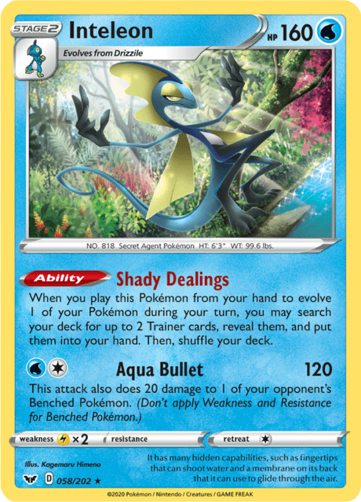
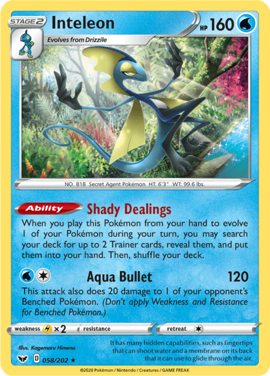
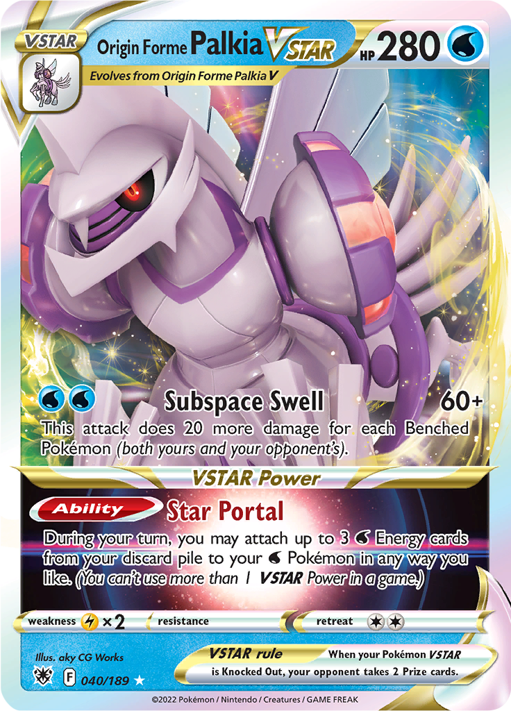
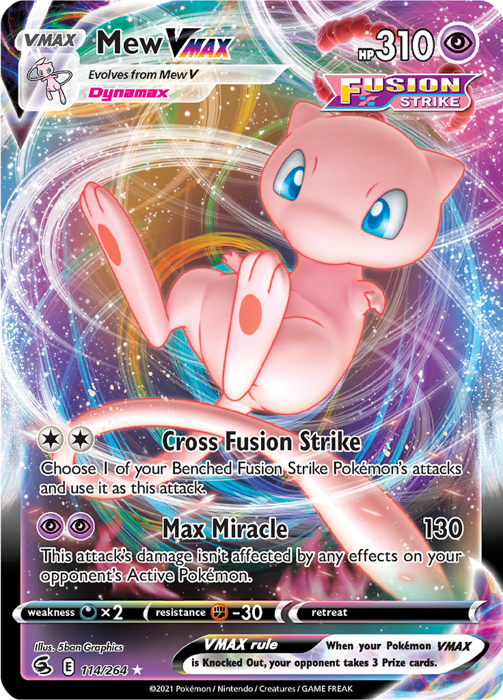
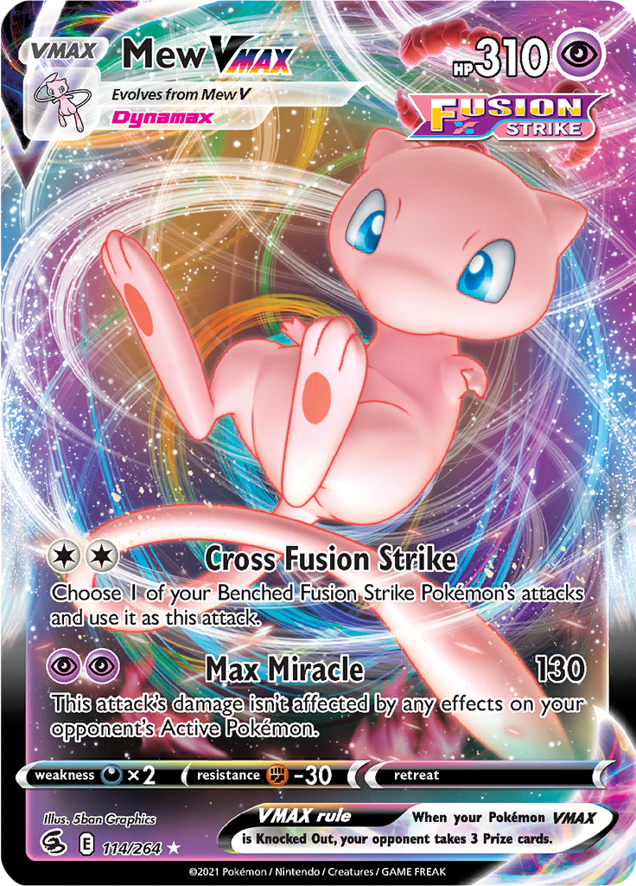

Table of Contents:
• 2021 Sword & Shield - Evolving Skies
• 2022 Sword & Shield - Brilliant Stars
• 2022 Sword & Shield - Lost Origin
• 2023 (Worlds) Battle Styles - Paldea Evolved
• 2023 Battle Styles - Paldean Fates
For many retro players, the question of “When does a format become retro” occasionally crosses their mind. A lot of players, with good reason, currently have “retro” format decks built up until 2019 Worlds (UPR-UNM). Besides the printed World Championship Decks, you won’t find too many people with decks built for formats during or following the pandemic era of the game.
While many of the formats during (and following) this era are some of my least favorite formats that I’ve been unfortunate enough to play in, a few formats have caught my (and others) attention for good candidates to revisit for deck building. While it may seem outlandish to archive these relatively recent metagames, I think it’s important to remember that many players started their competitive journey in this era, and would be happy to revisit them down the road. Getting to play old formats with players, new and old, is one of my greatest joys in this game, and I’m sure many other retro players have similar sentiments.
Also, there’s no such thing as a bad gateway drug (except maybe 2011 MD-BLW) to get your newer player friends into other retro formats.
I’ve chosen 5 formats for this article. One of which, I have built myself, two in which I aspire to build soon, and three, that I’ve seen others either have built or are consider building. For the sake of organization, I’ll be listing these chronologically. Keep in mind that my ratings of formats are of my personal opinion. With that being said, let's get into it!
2021 Sword & Shield - Evolving Skies (SSH-EVS)
Sword Shield -
Evolving Skies
- Skill: 4/10
- Affordability: 10/10
- Personal Enjoyment 3/10
- Recommended Gauntlet Size: 4-8 decks
The first format following the rotation of Tag Team GX Pokémon is a favorite of Simon Boschert's (@StarshineSimon) on Twitter. This format heavily features VMAX Pokémon, alongside the near ubiquitous Drizzile / Inteleon engine and the Single / Rapid Strike battle styles. With Sun & Moon control cards and Tag Teams in the rear-view mirror, this format felt like the first Sword & Shield format that identified with the general design principles.
/ Inteleon engine and the Single / Rapid Strike battle styles. With Sun & Moon control cards and Tag Teams in the rear-view mirror, this format felt like the first Sword & Shield format that identified with the general design principles.
Pros:
- The Inteleon engine is one of the most interesting engines in the game's history, providing search, set up, and damage modification
- The Inteleon engine gives decks lots of flexibility in Trainer card techs
- Most decks have a consistent setup with the Inteleon engine
- There are many different usable archetypes in this format
- Lots of spread strategies and healing cards can throw off the monotony of games
- Some cool rogue decks
- Playable Eeveelutions
Cons:
- This format was coined as the “Inteleon line + your favorite color VMAX format” due to how deck building was heavily focused around the Drizzile Inteleon engine
- Going first was a significant advantage in a format with 3-Prize Pokémon that usually 2 hit KO each other
- Weakness decided many matchups from my experience
- VMAX Pokémon make games go quickly
- While the Inteleon engine gives players incredible flexibility in deckbuilding, the games in this format felt to me lacking in skill expression once players figured out how to properly use the engine and resources
- If you don’t like Inteleon, you don’t like this format
My review of SSH-EVS may not be glowing, but some players would tell you otherwise and regard it as one of their favorites. With all of the cards of the format having rotated from the current Standard format, there’s never been a better time to build this format.
2022 Sword & Shield - Brilliant Stars (SSH-BRS)
Sword Shield -
Brilliant Stars
- Skill: 4/10
- Affordability: 8/10
- Personal Enjoyment 6.5/10
- Recommended Gauntlet Size: 4-8 decks
On March 3rd, 2022 I looked outside my window and saw an Absol. Then, I looked at my computer monitor, where Palkia VSTAR had just been revealed. Absol warned me of the disaster that was soon to come. With great haste I assembled SSH-BRS, knowing it would be the best Sword & Shield series format we’d ever get with disaster looming on the horizon.
(Results from the disaster that was the eventual Palkia Astral Radiance format.)
The Brilliant Stars format starlights some stellar new Pokémon to add to the previous format with the addition of Arceus VSTAR . Arceus is undoubtedly the highlight of this format as it is featured in many of the top decks. While every format since has relegated Arceus to a few variants, there are a dozen Arceus VSTAR partners in this format. Mew VMAX, Rapid Strike Urshifu VMAX, and Gengar VMAX bring representation for the three "battle styles". There are also fun rogues that succeeded like Whimsicott VSTAR and Zoroark
. Arceus is undoubtedly the highlight of this format as it is featured in many of the top decks. While every format since has relegated Arceus to a few variants, there are a dozen Arceus VSTAR partners in this format. Mew VMAX, Rapid Strike Urshifu VMAX, and Gengar VMAX bring representation for the three "battle styles". There are also fun rogues that succeeded like Whimsicott VSTAR and Zoroark Box.
Box.
Pros:
- Lots of deck variety (if Arceus variants can be considered as different decks)
- Fun rogue decks
- Fusion Strike engine and Bibarel add different viable engines outside of Inteleon
- VSTARs and viable single prize decks allow many different types of decks and longer games
- Same techability in Inteleon decks as SSH-EVS
- Arceus VSTAR partner techs for the meta
- Great Arceus VSTAR mirrors
Cons:
- Mew VMAX isn’t everyone’s favorite deck
- Significant role of weakness in the meta, but Dunsparce in Arceus decks can prevent this
- Lots of Arceus VSTAR
- Few top decks, if Arceus variants are not considered different decks
While I enjoy this format, I know it’s not for everyone. Maybe my love for Whimsicott gives me rose-tinted glasses, or maybe my love of infinitely techable Arceus builds excites me. This format also costs more than SSH-EVS for most decks, since Arceus VSTAR (somehow) has not fallen to a cheap price since its release. Still, I think it has some great mirrors and very fun rogue decks that make it fun to revisit.
2022 Sword & Shield - Lost Origin (SSH-LOR)
Sword Shield -
Lost Origin
- Skill: 6/10
- Affordability: 8/10
- Personal Enjoyment 5/10
- Recommended Gauntlet Size: 4-6 decks
Don’t worry about 2022 Worlds, we’re skipping past that... Lost Origin brought the Lost Zone back to the game for the first time since 2018's Lost Thunder. The variety of Lost Zone decks are a lot of fun to play. Previous top decks like Mew VMAX, Palkia VSTAR, and Arceus VSTAR (though more limited) continue to succeed. Regigigas also gained its long-awaited Gift Energy to finally see consistent success in this format.
to finally see consistent success in this format.
Pros:
- Many different deck engines (Bibarel, Inteleon, Lost Zone, Fusion Strike System)
- Lost Zone decks can be very fun to play
- Hisuian Heavy Ball
 lowers the impact of bad prizing
lowers the impact of bad prizing
Cons:
- Palkia VSTAR is still a dominant deck that is suffocating to play against. It gained a new partner, Kyurem VMAX
- Limited single prize viability outside of Lost Zone and Regigigas
- Small pool of viable decks, Lost Zone decks gatekeep evolving Pokémon
- Arceus variants are more limited
While I think the Lost Zone engine is really fun to revisit, I think Palkia VSTAR puts me off of building this format. I do think that the format was not as solved as the formats that followed it, as Lost Zone lists were initially pretty different. If Lost Zone decks had been perfected in this format, the meta may have been even more centralized around them. Besides, Giratina VSTAR unfortunately did not get the "Battle Deck treatment", so it is still a relatively pricey card, as of writing. Radiant Greninja and Radiant Charizard also give decks an extra added expense.
and Radiant Charizard also give decks an extra added expense.
2023 (Worlds) Battle Styles - Paldea Evolved (BST-PAL)
Battle Styles -
Paldea Evolved
- Skill: 6/10
- Affordability: 7/10
- Personal Enjoyment 7/10
- Recommended Gauntlet Size: 4-8 decks
While we got a dud of a format Worlds '22, that wasn't the case for the 2023 World Championships. Scarlet & Violet breathed new life into the TCG with lots of powerful evolving ex Pokémon and Stage 2 supporting Pokémon. Old faces from Sword & Shield were hard to overcome though, so many of the best decks in this format still feature VSTARs. And Mew VMAX takes its revenge after being underestimated by players worldwide.
Pros:
- 4 World Championship Printed Decks (Mew, Gardevoir, Lost Zone Kyogre, and Lugia) provide easy entry into building this format
- Lots of fun decks to play
- Different tier 2 variants of tier 1 decks to try out if you get bored (ie. Gardevoir ex
 / Mewtwo V-UNION
/ Mewtwo V-UNION )
) - Many different kinds of engines, nearly every deck plays a unique engine
- Iono
 and Reversal Energy
and Reversal Energy add comeback potential
add comeback potential - Hisuian Heavy Ball lowers the impact of bad prizing
Cons:
- Unless you’re willing to proxy with World Championship prints, many of the VSTARs are still pricey
- Forest Seal Stone
 and Radiants are additionally expensive
and Radiants are additionally expensive - Despite losing about half its power level, Lugia VSTAR
 is still very good in this meta, with 2 top variants. While each one has its own strengths and weaknesses, both of them open 2 Archeops
is still very good in this meta, with 2 top variants. While each one has its own strengths and weaknesses, both of them open 2 Archeops + Ultra Ball
+ Ultra Ball and play the rest of the game on auto-pilot
and play the rest of the game on auto-pilot - Some new decks are gatekept by old decks, especially decks relying on single prize evolving Pokémon, which get harassed by Sableye

- Some high rolly decks - between required Battle VIP Passes
 in most decks to set up and Electric Generator
in most decks to set up and Electric Generator spamming Miraidon decks, some games can come down to the opening turn
spamming Miraidon decks, some games can come down to the opening turn - Limited number of viable decks (excluding variants)
With lots of fun cards and interesting decks, I expect this to be a format that many people gravitate towards in the coming years. In casual play, Gardevoir may be even stronger than it was at the time, since it won’t have a pesky timer to take away its deserved wins. This Worlds format showed the potential of the Scarlet & Violet cards. We would see this potential fully realized in the next format I’ll cover.
2023 Battle Styles - Paldean Fates (BST-PAF)
Battle Styles -
Paldean Fates
- Skill: 7/10
- Affordability: 7/10
- Personal Enjoyment 8/10
- Recommended Gauntlet Size: 4-8 decks
With more Scarlet & Violet sets available, the ghosts of the VSTAR era slowly fade away, but champions like Giratina VSTAR still dominate. New Stage 2 competition in Charizard keeps these old threats on their toes, and the new aggressive Ancient and Future Pokémon show up to challenge the rank of older aggressive decks like Miraidon
keeps these old threats on their toes, and the new aggressive Ancient and Future Pokémon show up to challenge the rank of older aggressive decks like Miraidon . Control rears its head for the first time in a year with incredible new tools gifted to it by expansions Pokémon 151 and Paradox Rift. Cards from E block make one final showing in their last Standard format, one that I believe will stand the tests of time.
. Control rears its head for the first time in a year with incredible new tools gifted to it by expansions Pokémon 151 and Paradox Rift. Cards from E block make one final showing in their last Standard format, one that I believe will stand the tests of time.
Pros:
- An incredible amount of mechanics available to choose from (Battle Styles, Paradox, V, VMAX, VSTAR, V-Union, ex, Tera ex, and Radiants)
- Many of the decks utilize these different mechanics to feel unique from one another
- Very good Stage 2 decks in Gardevoir ex and Charizard ex
- Many fun to play decks with great matchups
- Iono, Reversal Energy, and Counter Catcher
 add comeback potential
add comeback potential - Lugia VSTAR takes a back seat in the meta
- Control is back in the meta (is not suffocating though)
- Technical Machines offer lots of deck building creativity with Arven

- Large pool of legal cards, since its at the end of a rotation
- Some fun rogues (Tord Reklev Charizard pile, Klawf/Electrode)
- Many techable Basic Pokémon to help matchups (Jirachi
 , Manaphy
, Manaphy , Spiritomb
, Spiritomb )
)
Cons:
- As with any Battle VIP pass format, a bad opening turn can spell trouble for some decks, and vice versa
- The meta decks have very solved lists, with little deckbuilding left to do
- Due to most of the cards being Standard legal and recently released, many cards in this format have not hit a low price yet
- If you hate control, you won’t love seeing it here
- Iron Hands
 brings back everyone’s favorite game effect of punishing set up decks and single prize Pokémon
brings back everyone’s favorite game effect of punishing set up decks and single prize Pokémon - Some decks feel impossible to beat if they get a perfect set up (Gardevoir, Chien-Pao)
While this format is only a month gone, as of the time of writing this, I find myself loathing the current Standard format and wishing I could play another few sets of full-power Gardevoir ex in its prime. This format is, in my opinion, the best Standard format following the introduction of 3-Prize Pokémon in February 2019. I’m not the only one to notice this, though. A few other retro players are already watching the prices of cards, waiting for them to drop, so they can play this format for years to come.
Thanks for reading. While you may not share my sentiments of what formats stand out from the 2020s, I hope you’ve at least gotten a chance to think back on the time spent in the shadow of Generation 8. While we haven’t truly recovered from the Tag Team epidemic yet, I think there are some fun formats to revisit from these years (especially Paradox Rift and Paldean Fates). If this article didn’t do enough convincing from me, I’m sure I can rely on Lugia VSTAR, aggressive Item gust, and Iron Hands ex to take people’s minds off Standard for a minute...